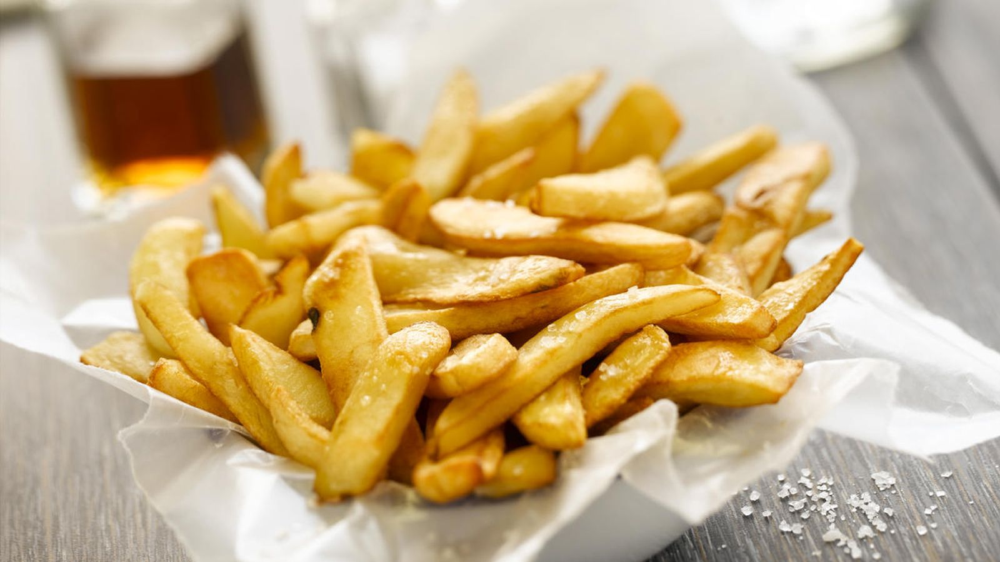

Patatas Fritas
Receta de patatas fritas caseras

Ingredientes
3 o 4 patatas(300g)
4 dientes de ajo
Aceite de oliva
Sal
Elaboracion(Pasos)
Calentar aceite en una sarten
añadir las patatas cortas
freir al gusto
servir en el plato